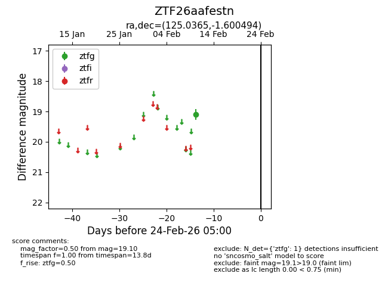
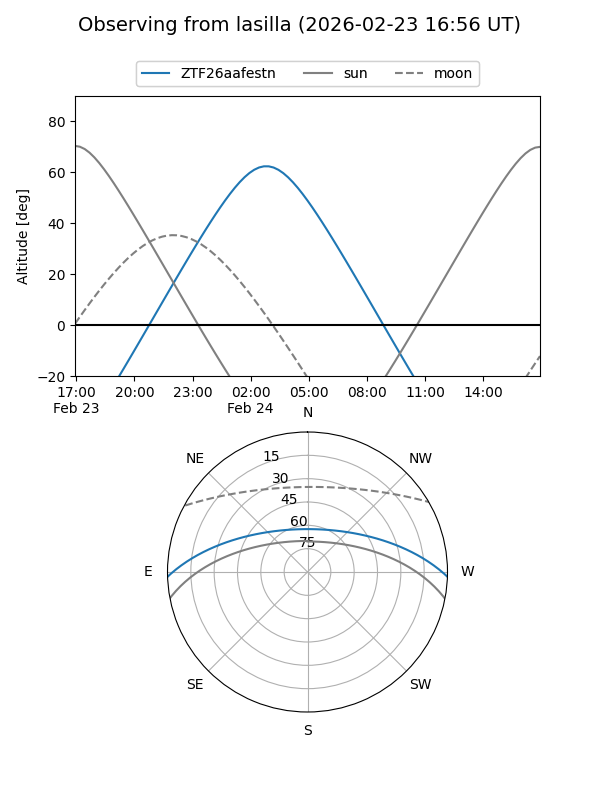
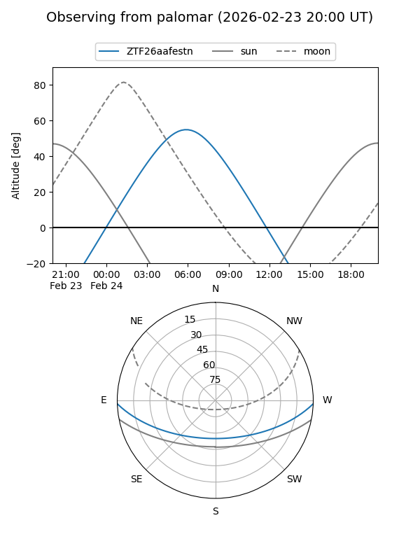

ZTF26aafestn
Target ZTF26aafestn at 2026-02-24 09:08
Aliases and brokers:
FINK: link
Lasair: link
ALeRCE: link
alt names
ZTF26aafestn (ztf,fink_ztf)
Coordinates:
equatorial (ra, dec) = 125.0365,-1.60049
equatorial (HMS+DMS) = 08:20:08.75,-01:36:01.78
galactic (l, b) = (224.9411,+18.84905)
Flags:
Photometry:
last ztfg=19.10
1 ztfg detections
Lightcurve

Visibility


Additional plots